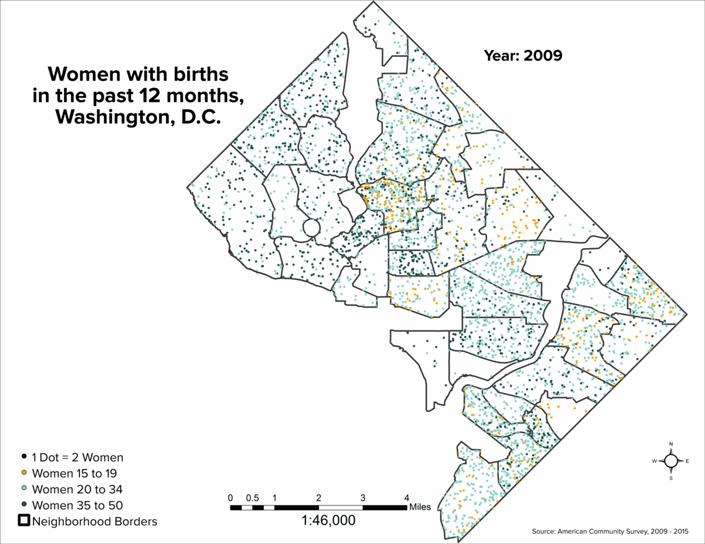
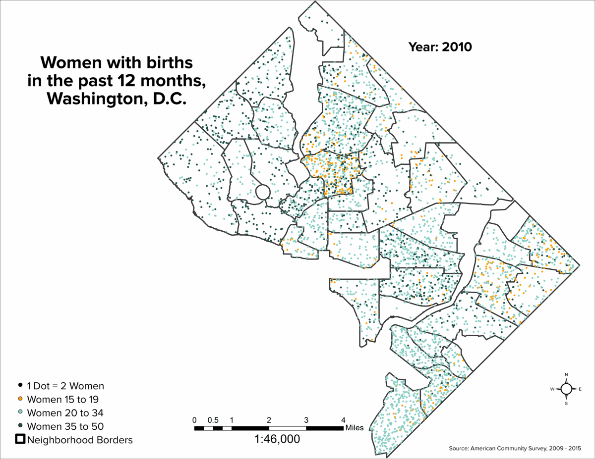
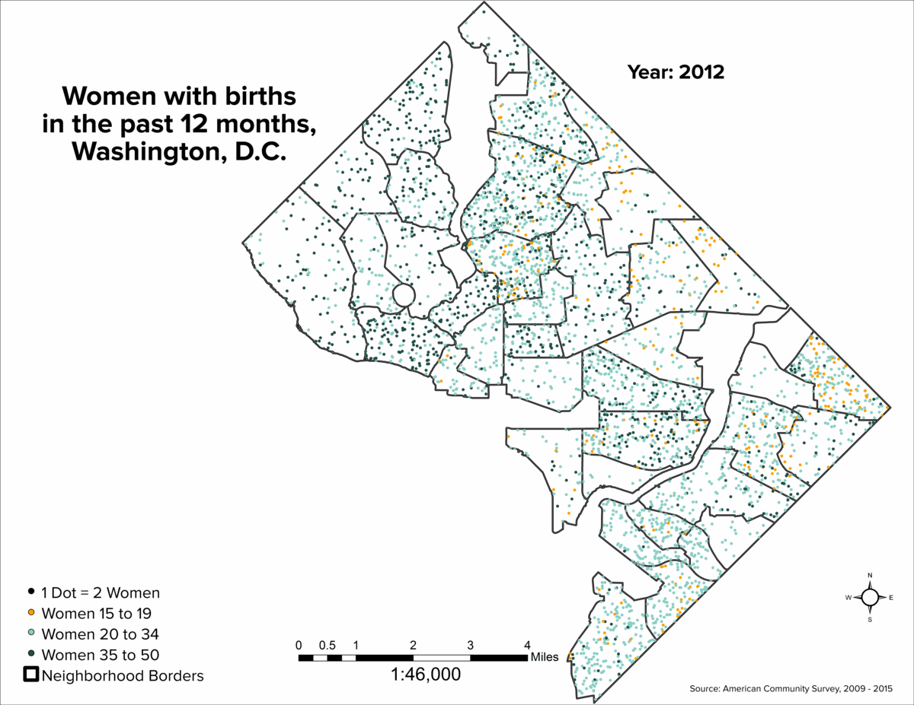
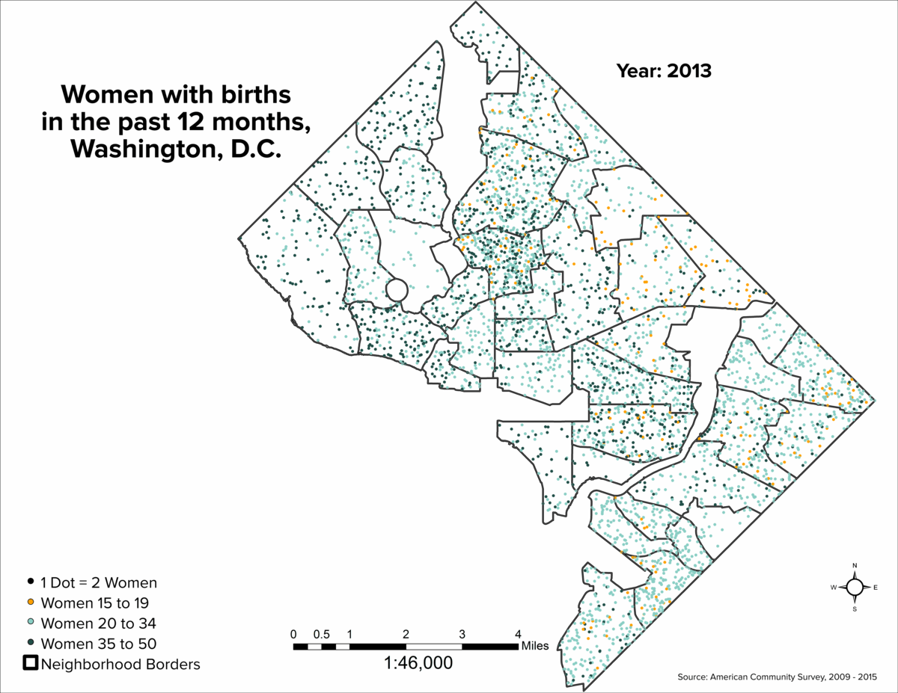
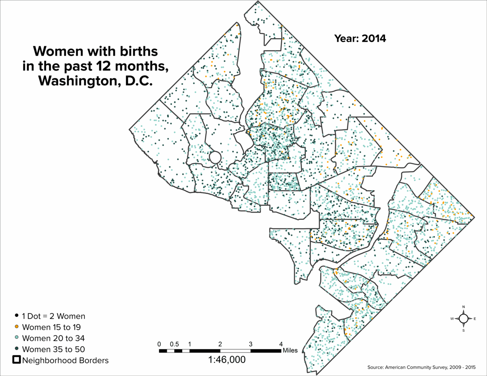
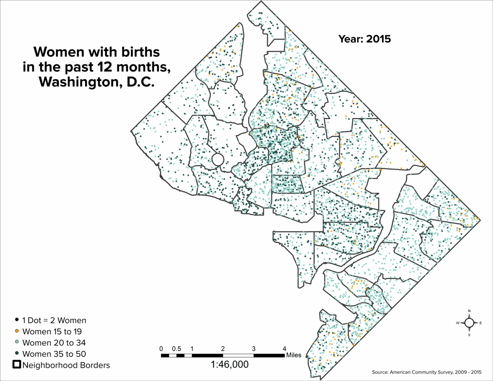

A map of women with births in the past 12 months for years 2009 to 2015. The full article can be found at our main website here.







❮
❯
A map of women with births in the past 12 months for years 2009 to 2015. The full article can be found at our main website here.